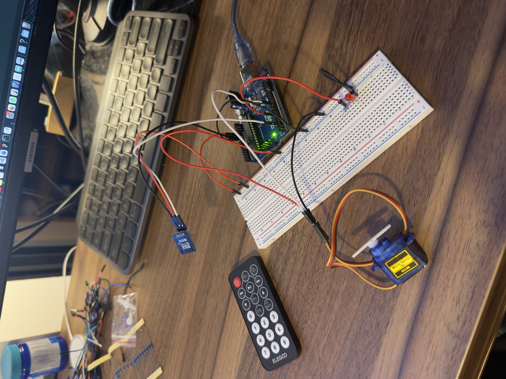
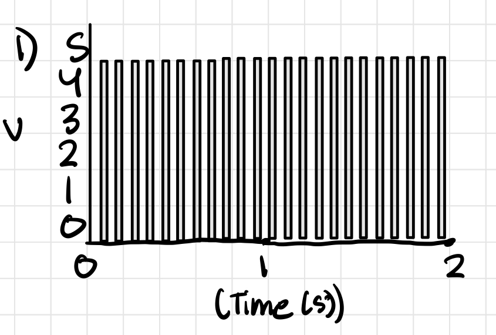

For the circuit, I chose to use a Red LED.
I used a resistance of 220 ohms for it because after
doing the calculations, I found that the maximum Resistance I would need is
160 ohms. 220 was the closest standard resistance value.

The gif is a little laggy, but here is what is happening. When you click 0 on the remote, the servo rotates about 40 degrees. When you click 1, it rotates 90, and when you click 2, it rotates 180. For the duration that it is rotating, the red LED increases in brightness from 0 to 255. The brightness indicates how close the servo is to finishing its rotation
// Including the neccessary libraries for the assignment
#include <IRremote.h>
#include <Servo.h>
// Initializing the different IR and LED Pins.
int ir = 2;
int led = 5;
// Initializing the position of servo
int pos = 0;
// Creating a Servo object
Servo servo_9;
void setup() {
// Ataches the servo object to pin 9
// and sets minimum pulse to 500 (0 degree)
// and maximum pulse to 2500 (180 degrees)
servo_9.attach(9, 500, 2500);
// Set LED pin as output
pinMode(led, OUTPUT);
// Starts the IR sensor and and makes it so that the
// onboard LED blinks with every recieved input
IrReceiver.begin(ir, ENABLE_LED_FEEDBACK);
// Begin reading 9600 baud
Serial.begin(9600);
}
// Created a function to make using the switch cases below easier
void moveServo(int targetPos) {
// for loop to move servo from 0 degrees to targetPos
for (pos = 0; pos <= targetPos; pos += 1) {
// Set the servo to the current position
servo_9.write(pos);
// Map the servo position to LED brigntess
int brightness = map(pos, 0, 180, 0, 255);
// Set the LED brightness
analogWrite(led, brightness);
// Small delay to not freak out the servo
delay(15);
}
// Once the loop is done, turn off LED to signify
// Servo reached its final position
analogWrite(LED_PIN, 0);
}
void loop() {
// Check to see if IR signal is recieved
if (IrReceiver.decode()) {
// Store the IR code (source: https://forum.arduino.cc/t/help-understanding-simplereceiver-example-ir-library/1000085)
unsigned long code = IrReceiver.decodedIRData.decodedRawData;
// Print the received code
Serial.println(code, HEX);
// Compare the code with some predefined values
switch (code) {
// If clicked 0
case 0xE916FF00:
// Move to 45 degrees
moveServo(45);
break;
// if clicked 1
case 0xF30CFF00:
// Move to 90 degrees
moveServo(90);
break;
// if clicked 2
case 0xE718FF00:
// Move to 180 degrees
moveServo(180);
break;
// No default case
default:
break;
}
// Resume reading signals for next input
IrReceiver.resume();
}
}
Additional Questions
1. 
2. Your input device is slightly broken, leading it to give us an erroneous reading 1% of the time. How can we address this? Answer in (pseudo)code.
# List to store read IR Values
values = []
# Set a 10% ok range
error = 0.1
def get_sensor_reading():
# Read the IR sensor
reading = read_sensor()
# Add the reading to the list
values.append(reading)
# if the list is too long, get rid of the oldest value
if len(values) > 10:
values.pop(0)
# Get an averaged value of all of the readings
avg_value = sum(values) / len(values)
# if th reading is outside the error range, return the averaged value
# else return the sensor read reading
if abs(reading - avg_value) > error:
return smoothed_value
else:
return reading
3. Your input device is slightly noisy, leading the measurement to randomly deviate from the true measurement up or down by 10%. How can we address this? Answer in (pseudo)code.
# List to store recent readings
values = []
def get_filtered_measurement(new_reading):
# Add the new reading to the list
values.append(new_reading)
# If the list is too long, get rid of the oldest value
if len(values) > 5:
values.pop(0)
# Return the average of the stored readings
# takes into account the 10% fluctuation
return sum(values) / len(values)